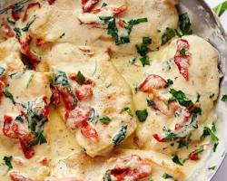

Tuscan chicken is an Italian-inspired weeknight dinner that pairs golden pan-seared chicken breasts with a rich, silky garlic cream sauce. The base features sun-dried tomatoes and fresh baby spinach simmered in heavy cream, creating a balance of savory, tangy, and herbal flavors in a single skillet.
The sauce is thickened naturally with finely grated Parmesan cheese and reduced over gentle heat until it coats the back of a spoon. Searing the chicken first locks in moisture, while simmering it briefly in the sauce at the end ensures tender, flavorful meat in under thirty minutes.
Pat chicken cutlets dry with paper towels. Season both sides with salt, black pepper, and garlic powder. Heat olive oil and 1 tablespoon of butter in a large skillet over medium-high heat. Sear the chicken for 5–6 minutes per side until golden brown and cooked through (165°F / 74°C). Transfer to a plate and set aside.
Reduce the skillet heat to medium. Melt the remaining 1 tablespoon of butter. Add minced garlic and sliced sun-dried tomatoes, cooking for about 1 minute until fragrant.
Pour in the chicken broth and heavy cream, scraping up any browned bits stuck to the bottom of the skillet. Bring to a gentle simmer, then stir in Italian seasoning and grated Parmesan cheese. Simmer for 2–3 minutes until the cheese is melted and the sauce begins to thicken.
Stir in the fresh baby spinach and let it wilt in the simmering sauce for about 1–2 minutes. Return the cooked chicken cutlets and any rested juices back into the skillet, spooning the sauce over the top. Simmer for 1 minute to reheat before serving over pasta, rice, or with crusty bread.